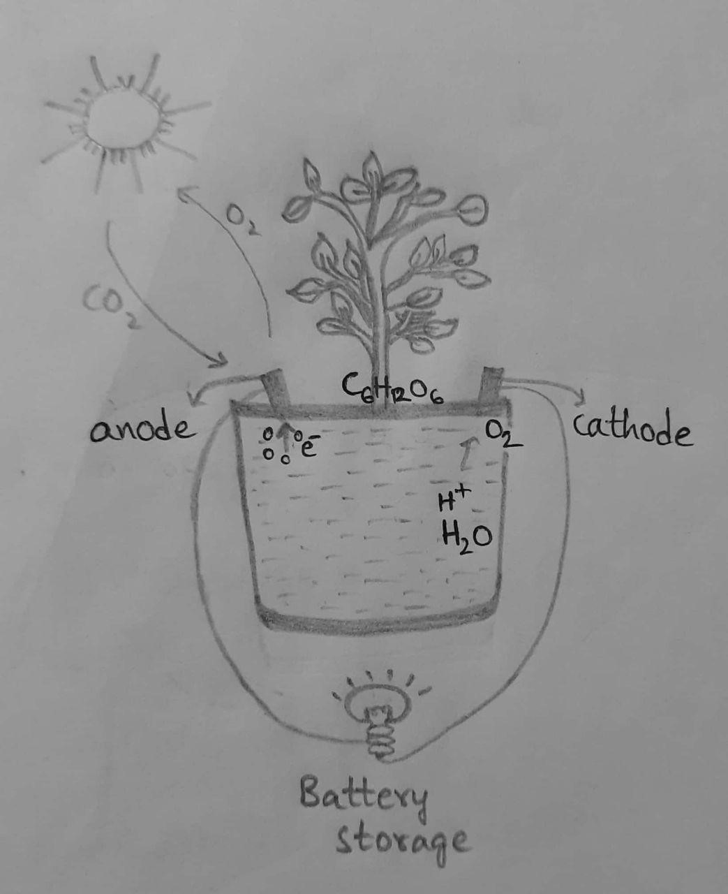

I identified that there are regular power cuts in villages due to shortage of electricity and they even lack basic supply of electricity.
By researching I found that the problem in villages is electricity produced is not supplied to villages much because of high end need for cities.
There are many ways of producing electricity using renewable sources. Some of them are:
i. Solar power iii. Hydro power v. Geothermal energy
ii. Wind power iv. Nuclear power vi. plant energy
Out of all these solutions, I found plant electricity as the best possibility as it is affordable, more useful, easily available, less pollutant and does not require much effort.



This idea of producing electricity is proven successful in labs and at test executions. This is an easy circuit which most of the people can understand and fix, so that they will not have any problems related to circuit damage. And this is an eco-friendly project which also encourages in planting more tress and improving nature by reducing pollution. So, I conclude that this is a reliable attempt to provide electricity for villages in a cheap and best way.
Electricity from plants:
After testing these solutions, I found that my ideas are useful and feasible for electricity supplement in villages and does not need a redesign.